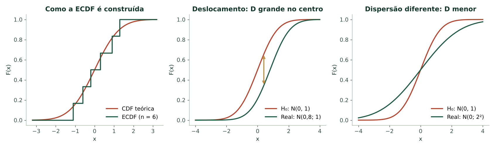
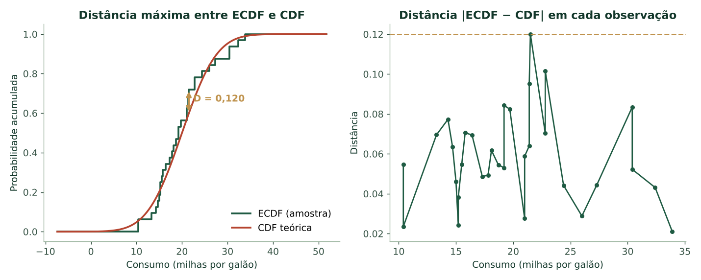
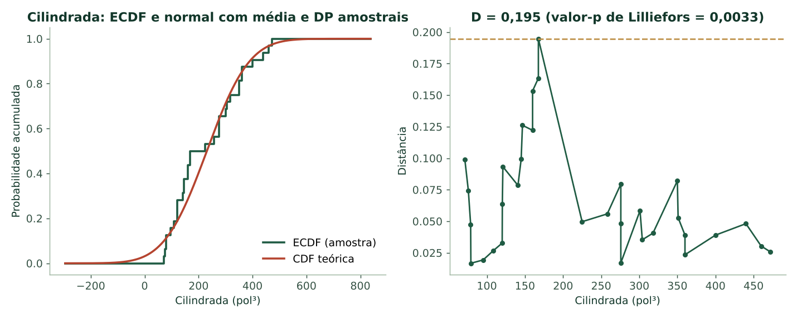

Kolmogorov–Smirnov (uma amostra)
Verifica se uma amostra é compatível com uma distribuição de probabilidade especificada previamente, medindo a maior distância entre a ECDF e a curva teórica.
Comece por aqui
Imagine que você tem uma amostra e uma curva teórica em mente: por exemplo, uma normal com média e desvio-padrão definidos por uma norma técnica. O teste de Kolmogorov–Smirnov (KS) pergunta: o quanto a distribuição acumulada observada se afasta dessa curva? Basta olhar para a maior distância vertical entre as duas.
O que é o teste
O KS de uma amostra compara a função de distribuição empírica (ECDF, \(F_n\)) com uma função de distribuição acumulada teórica \(F_0\). A ECDF é uma escada que sobe \(1/n\) a cada observação; \(F_0\) é a curva que se afirma sob \(H_0\). O teste toma a maior diferença vertical entre as duas.

Se a média e o desvio-padrão forem estimados da própria amostra, o KS clássico fica excessivamente conservador (valores-p grandes demais). Nesse caso, use a correção de Lilliefors, tratada adiante.
Pressupostos e como verificá-los
| Pressuposto | Por que importa | Como verificar |
|---|---|---|
| Variável contínua | A distribuição exata de D assume ausência de empates. | anyDuplicated(x); o R avisa quando há empates. |
| Observações independentes e identicamente distribuídas | Dependência invalida a distribuição de D. | Avalie o delineamento; para séries, acf(x). |
| F₀ totalmente especificada | Parâmetros estimados reduzem D e distorcem o valor-p. | Os valores de μ e σ vêm de norma, teoria ou outro estudo? Se vêm dos dados, use Lilliefors. |
| Amostra não muito pequena | Com n pequeno o teste tem pouco poder. | Complemente com o gráfico ECDF e o Q–Q. |
Hipóteses e estatística de teste
Em que:
- \(D_n\)
- estatística de Kolmogorov–Smirnov (maior distância vertical)
- \(F_n(x)\)
- função de distribuição empírica: proporção de observações menores ou iguais a x
- \(F_0(x)\)
- função de distribuição acumulada teórica sob H₀
- \(x_{(i)}\)
- i-ésima observação em ordem crescente
- \(n\)
- tamanho da amostra
- \(D^{+},D^{-}\)
- maiores desvios com a ECDF acima e abaixo da curva teórica, respectivamente
Exemplo numérico, passo a passo (n = 5)
Dados ordenados: 12, 17, 19, 22 e 28. Hipótese: \(F_0\) é a normal com \(\mu=20\) e \(\sigma=6\), fixados antes de ver os dados.
| i | x(i) | F₀(x(i)) | i/n | (i−1)/n | i/n − F₀ | F₀ − (i−1)/n |
|---|---|---|---|---|---|---|
| 1 | 12 | 0,0912 | 0,2 | 0,0000 | 0,1088 | 0,0912 |
| 2 | 17 | 0,3085 | 0,4 | 0,2000 | 0,0915 | 0,1085 |
| 3 | 19 | 0,4338 | 0,6 | 0,4000 | 0,1662 | 0,0338 |
| 4 | 22 | 0,6306 | 0,8 | 0,6000 | 0,1694 | 0,0306 |
| 5 | 28 | 0,9088 | 1,0 | 0,8000 | 0,0912 | 0,1088 |
\(D^+=0,1694\), \(D^-=0,1088\) e, portanto, \(D_5=0,1694\). O valor-p exato é 0,994: nenhuma evidência contra \(F_0\) (com n = 5, o poder é muito baixo).
Propriedades e valor-p
- \(0\leq D_n\leq 1\); quanto maior \(D_n\), maior a evidência contra \(H_0\) (teste unilateral à direita na estatística).
- Sob \(H_0\) contínua e totalmente especificada, a distribuição de \(D_n\) é a mesma para qualquer \(F_0\).
- Assintoticamente, \(\sqrt n\,D_n\) converge para a distribuição de Kolmogorov: \[\begin{aligned}P(\sqrt n D_n &> t) \\ &\approx 2\sum_{k=1}^{\infty}(-1)^{k-1}e^{-2k^2t^2}.\end{aligned}\]
- Para n pequeno e sem empates, o R usa o valor-p exato (algoritmo de Marsaglia–Tsang–Wang); com empates, usa a aproximação assintótica.
- Não há intervalo de confiança usual para D. Existem, porém, bandas de confiança para F (Dvoretzky–Kiefer–Wolfowitz): \(F_n(x)\pm\sqrt{\ln(2/\alpha)/(2n)}\).
Correção de Lilliefors
Quando \(\mu\) e \(\sigma\) são estimados por \(\bar x\) e \(s\), usa-se a mesma estatística \(D\), mas com valor-p calibrado por simulação (LILLIEFORS, 1967); no R, nortest::lillie.test() aplica uma aproximação analítica desse cálculo.
Como interpretar os resultados
| Resultado | Leitura | Cuidado |
|---|---|---|
| p < 0,05 | A distribuição observada difere de F₀ em algum ponto. | Não indica onde nem o quanto; consulte o gráfico da ECDF. |
| p ≥ 0,05 | Sem evidência suficiente contra F₀. | Não prova que F₀ esteja correta, sobretudo com n pequeno. |
| D alto e n grande | Pequenas diferenças são detectadas. | Avalie a relevância prática da distância. |
Reporte n, D e valor-p, informando se F₀ foi fixada a priori ou estimada (neste caso, Lilliefors).
Como executar no R e em Python
Para o R, instale o R e, depois, o RStudio.
Onde executar o código em Python
Não é preciso instalar nada: o Google Colab é um computador na nuvem, gratuito, que executa Python pelo navegador e já traz as bibliotecas usadas aqui (numpy, scipy e matplotlib).
ks.test(): pacotestats(já instalado).lillie.test(): pacotenortest. Instale uma vez cominstall.packages("nortest")e carregue comlibrary(nortest).
x <- mtcars$mpg
ks.test(x, "pnorm", mean = 20, sd = 6, exact = FALSE) # parâmetros fixados a priori
library(nortest); lillie.test(x) # parâmetros estimados
Exemplo de aplicação
Contexto dos dados
O conjunto mtcars traz o consumo (mpg, milhas por galão) de 32 automóveis. Suponha que um padrão de referência estabeleça um consumo com distribuição aproximadamente normal de média 20 e desvio-padrão 6. Queremos saber se os dados são compatíveis com essa especificação. Depois, perguntamos o mesmo sobre a cilindrada, agora com parâmetros estimados da amostra.
Código em R
# Kolmogorov–Smirnov (uma amostra): exemplo completo ----
# Pacotes: stats (já instalado) e nortest (para a versão de Lilliefors)
# install.packages("nortest") # execute uma única vez
library(nortest)
# 1. Dados: consumo de 32 automóveis (milhas por galão)
x <- mtcars$mpg
summary(x); length(x)
# 2. ECDF e CDF teórica (H0 totalmente especificada: N(20, 6^2))
plot(ecdf(x), main = "ECDF do consumo versus N(20, 6^2)", xlab = "mpg", col = "darkgreen")
curve(pnorm(x, mean = 20, sd = 6), add = TRUE, col = "red", lwd = 2)
# 3. Teste de KS com parâmetros FIXADOS a priori
ks.test(x, "pnorm", mean = 20, sd = 6, exact = FALSE)
# 4. Quando os parâmetros vêm da amostra: use Lilliefors, nunca o KS clássico
lillie.test(x) # consumo (mpg)
lillie.test(mtcars$disp) # cilindrada (disp)
# 5. Distância D calculada manualmente
xs <- sort(x); n <- length(xs); Fx <- pnorm(xs, 20, 6)
Dmais <- max((1:n)/n - Fx)
Dmenos <- max(Fx - (0:(n - 1))/n)
c(Dmais = Dmais, Dmenos = Dmenos, D = max(Dmais, Dmenos))
A mesma análise em Python, com os resultados
Cole o código em um notebook do Google Colab ↗ e execute com Shift+Enter. Os valores abaixo são a saída desse código.
# Bibliotecas: numpy, scipy e matplotlib (já instaladas no Google Colab)
import numpy as np
from scipy import stats
import matplotlib.pyplot as plt
mpg = np.array([21, 21, 22.8, 21.4, 18.7, 18.1, 14.3, 24.4, 22.8, 19.2, 17.8, 16.4, 17.3, 15.2, 10.4, 10.4, 14.7, 32.4, 30.4, 33.9, 21.5, 15.5, 15.2, 13.3, 19.2, 27.3, 26, 30.4, 15.8, 19.7, 15, 21.4])
cyl = np.array([6, 6, 4, 6, 8, 6, 8, 4, 4, 6, 6, 8, 8, 8, 8, 8, 8, 4, 4, 4, 4, 8, 8, 8, 8, 4, 4, 4, 8, 6, 8, 4])
disp = np.array([160, 160, 108, 258, 360, 225, 360, 146.7, 140.8, 167.6, 167.6, 275.8, 275.8, 275.8, 472, 460, 440, 78.7, 75.7, 71.1, 120.1, 318, 304, 350, 400, 79, 120.3, 95.1, 351, 145, 301, 121])
# Funções auxiliares ----
def ks_dist(x, cdf):
"""Retorna D+, D- e D para a CDF teórica informada."""
xs = np.sort(x); n = len(xs); F = cdf(xs); i = np.arange(1, n + 1)
dp = np.max(i / n - F); dm = np.max(F - (i - 1) / n)
return dp, dm, max(dp, dm)
def lillie(x):
"""Lilliefors para normalidade (aproximação de Dallal e Wilkinson, 1986)."""
xs = np.sort(x); n = len(xs); i = np.arange(1, n + 1)
p = stats.norm.cdf((xs - xs.mean()) / xs.std(ddof=1))
K = max(np.max(i / n - p), np.max(p - (i - 1) / n))
Kd, nd = (K, n) if n <= 100 else (K * (n / 100)**0.49, 100)
pv = np.exp(-7.01256*Kd**2*(nd + 2.78019) + 2.99587*Kd*np.sqrt(nd + 2.78019)
- 0.122119 + 0.974598/np.sqrt(nd) + 1.67997/nd)
if pv > 0.1:
KK = (np.sqrt(n) - 0.01 + 0.85/np.sqrt(n)) * K
if KK <= 0.302: pv = 1
elif KK <= 0.5: pv = 2.76773 - 19.828315*KK + 80.709644*KK**2 - 138.55152*KK**3 + 81.218052*KK**4
elif KK <= 0.9: pv = -4.901232 + 40.662806*KK - 97.490286*KK**2 + 94.029866*KK**3 - 32.355711*KK**4
elif KK <= 1.31: pv = 6.198765 - 19.558097*KK + 23.186922*KK**2 - 12.234627*KK**3 + 2.423045*KK**4
else: pv = 0
return K, pv
# 1. Dados: consumo (mpg) de 32 automóveis
x = mpg
q = np.percentile(x, [0, 25, 50, 75, 100])
print("Mín, Q1, Mediana, Q3, Máx:", np.round(q, 2), "| Média:", round(x.mean(), 2), "| n:", len(x))
# 2. ECDF versus CDF teórica N(20, 6²)
cdf0 = lambda v: stats.norm.cdf(v, 20, 6)
xs = np.sort(x)
plt.step(xs, np.arange(1, len(xs) + 1) / len(xs), where="post", label="ECDF")
t = np.linspace(xs.min() - 5, xs.max() + 5, 300)
plt.plot(t, cdf0(t), color="red", label="N(20, 6²)")
plt.legend(); plt.xlabel("mpg"); plt.show()
# 3. KS com parâmetros fixados a priori (valor-p assintótico, pois há empates)
res = stats.kstest(x, cdf0, method="asymp")
print(f"\nKS (N(20, 6²)): D = {res.statistic:.5f}, p-valor = {res.pvalue:.4f}")
# 4. Distância calculada manualmente
dp, dm, D = ks_dist(x, cdf0)
print(f"D+ = {dp:.6f} | D- = {dm:.6f} | D = {D:.6f}")
# 5. Parâmetros estimados da amostra: Lilliefors
for nome, v in [("mpg", mpg), ("disp", disp)]:
K, pv = lillie(v)
print(f"Lilliefors ({nome}): D = {K:.4f}, p-valor = {pv:.4f}")
# 6. Exemplo do texto (n = 5) com N(20, 6²)
y = np.array([12, 17, 19, 22, 28.])
dp5, dm5, D5 = ks_dist(y, cdf0)
print(f"\nn = 5: D+ = {dp5:.4f}, D- = {dm5:.4f}, D = {D5:.4f}, p exato = {stats.kstest(y, cdf0).pvalue:.4f}")
Resultados da execução
Mín, Q1, Mediana, Q3, Máx: [10.4 15.42 19.2 22.8 33.9 ] | Média: 20.09 | n: 32 KS (N(20, 6²)): D = 0.12004, p-valor = 0.7457 D+ = 0.120044 | D- = 0.083482 | D = 0.120044 Lilliefors (mpg): D = 0.1263, p-valor = 0.2171 Lilliefors (disp): D = 0.1947, p-valor = 0.0033 n = 5: D+ = 0.1694, D- = 0.1088, D = 0.1694, p exato = 0.9938


| Análise | D | Valor-p | Decisão (5%) |
|---|---|---|---|
| mpg versus N(20, 6²) (KS assintótico) | 0,1200 | 0,7457 | Não rejeita H₀ |
| mpg com parâmetros estimados (Lilliefors) | 0,1263 | 0,2171 | Não rejeita H₀ |
| disp com parâmetros estimados (Lilliefors) | 0,1947 | 0,0033 | Rejeita H₀ |
Leitura: o consumo é compatível com a normal de referência, mas a cilindrada apresenta afastamento nítido. Observe que o mpg tem valores repetidos (por exemplo, 21,0 e 30,4): há empates e, por isso, usa-se o valor-p assintótico.
Erros comuns
| Erro | Consequência | Como evitar |
|---|---|---|
Usar ks.test(x, "pnorm", mean(x), sd(x)) | Valor-p inflado; quase nunca rejeita. | Use lillie.test() ou outro teste de normalidade. |
| Ignorar empates | Distribuição exata deixa de valer. | Use a versão assintótica e interprete com cautela; considere medidas mais finas. |
| Tratar p alto como prova | Poder baixo em n pequeno. | Combine com o gráfico ECDF e o Q–Q. |
| Esperar sensibilidade nas caudas | O KS é mais sensível ao centro da distribuição. | Para caudas, use Anderson–Darling. |
| Aplicar a dados discretos | Teste conservador. | Use o qui-quadrado de aderência. |
Alternativas e fluxo de trabalho
| Procedimento | Quando preferir |
|---|---|
| Shapiro–Wilk | Normalidade com parâmetros estimados; melhor poder para n entre 10 e 2000. |
| Anderson–Darling | Interesse nas caudas; maior poder que o KS. |
| Lilliefors | Normalidade, quando se quer manter a estrutura do KS. |
| Qui-quadrado de aderência | Variáveis discretas ou categorizadas. |
KS de duas amostras (ks.test(x, y)) | Comparar duas amostras sem especificar F₀. |
- Defina F₀ antes de olhar os dados e registre a origem dos parâmetros.
- Desenhe a ECDF e a curva teórica.
- Escolha KS (parâmetros fixos) ou Lilliefors (parâmetros estimados).
- Reporte n, D e valor-p e interprete junto com o gráfico.
Referências desta ficha
- KOLMOGOROV, Andrey N. Sulla determinazione empirica di una legge di distribuzione. Giornale dell’Istituto Italiano degli Attuari, v. 4, p. 83-91, 1933.
- MASSEY JR., Frank J. The Kolmogorov-Smirnov test for goodness of fit. Journal of the American Statistical Association, v. 46, n. 253, p. 68-78, 1951.
- LILLIEFORS, Hubert W. On the Kolmogorov-Smirnov test for normality with mean and variance unknown. Journal of the American Statistical Association, v. 62, n. 318, p. 399-402, 1967.
- MARSAGLIA, George; TSANG, Wai Wan; WANG, Jingbo. Evaluating Kolmogorov’s distribution. Journal of Statistical Software, v. 8, n. 18, p. 1-4, 2003.
- GROSS, Juergen; LIGGES, Uwe. nortest: tests for normality. R package, versão 1.0-4, 2015. Disponível em: https://CRAN.R-project.org/package=nortest.
- HENDERSON, Harold V.; VELLEMAN, Paul F. Building multiple regression models interactively. Biometrics, v. 37, n. 2, p. 391-411, 1981. (Conjunto de dados
mtcars, pacotedatasetsdo R.) - R CORE TEAM. R: a language and environment for statistical computing. Vienna: R Foundation for Statistical Computing, 2026. Disponível em: https://www.r-project.org/.
- POSIT TEAM. RStudio: integrated development environment for R. Boston: Posit Software, PBC. Disponível em: https://posit.co/download/rstudio-desktop/.
- VIRTANEN, Pauli et al. SciPy 1.0: fundamental algorithms for scientific computing in Python. Nature Methods, v. 17, p. 261-272, 2020. DOI: 10.1038/s41592-019-0686-2. (Funções do módulo
scipy.stats.) - HARRIS, Charles R. et al. Array programming with NumPy. Nature, v. 585, p. 357-362, 2020. DOI: 10.1038/s41586-020-2649-2.
- HUNTER, John D. Matplotlib: a 2D graphics environment. Computing in Science & Engineering, v. 9, n. 3, p. 90-95, 2007.
- GOOGLE. Google Colaboratory. Disponível em: https://colab.research.google.com/.
- As figuras desta ficha foram elaboradas pelo autor.

Prof. Dr. Cássius Henrique Xavier Oliveira
Professor · ICTIN/UFLA · Estatística, Confiabilidade e Ciência de Dados.
Conheça minha trajetória e projetos →